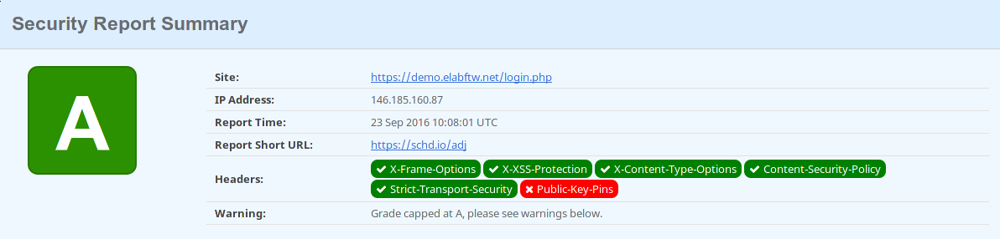

About Docker¶

Introduction¶
Using Docker allows you to run elabftw without touching the configuration of your server or computer. By using this docker image you don’t have to worry about missing php extensions or misconfigurations of the server because all was done for you beforehand. It’s also easier to upgrade and keep your installation up to date.
How does it work?¶
Running eLabFTW with Docker means everything needed will be provided. You’ll have the correct version of every library and the webserver will be properly setup with a secure configuration. Because eLabFTW will run in a container. In fact you’ll have two containers running. One will be from the official MySQL image, running a MySQL server. The other will be the eLabFTW image, with a webserver + PHP and the eLabFTW files. In order to facilitate the whole process, we will use docker-compose. This tool will allow us to do the configuration in a YAML file, easy to modify and copy around, and also permit easy start/stop of the containers.
About the docker image¶
- The elabftw docker image is using Alpine Linux as a base OS, so we get a lightweight and secure base.
- PHP 7 is used so we get an up to date and fast PHP.
- Nginx is used so we get the best webserver out there running our app with HTTP/2 capabilities.
Using the provided Docker image adds security features automatically:
- header X-Frame-Option
- header X-XSS-Protection
- header X-Content-Type-Options
- header Strict-Transport-Security
- header Content-Security-Policy to prevent XSS
- use Diffie-Hellman for key exchange with 2048 bits parameter
- use modern cipher suite and protocols for SSL. This will result in an A rating on SSLLabs, as you can see below.
- custom secure php configuration
- custom secure nginx configuration
Test scan of an eLabFTW install at SecurityHeaders.io:
(there is no public key pin because this needs to be done by the server admin)
Test scan of an eLabFTW install at Qualys SSL labs:

Just for fun, try to use these two websites to scan the sites of other services you might use or consider using. You’ll see a lot of F marks… I’ll let you draw your own conclusions from that ;)
You don’t have to be a specialist in web security to see that some services are completely insecure and should be avoided. Full security can never be completely achieved when it comes to web and computers, but with eLabFTW at least you have the best possible setup to mitigate or stop the most commons attacks.